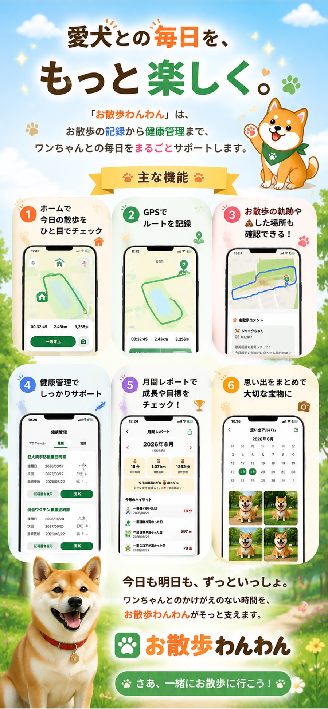
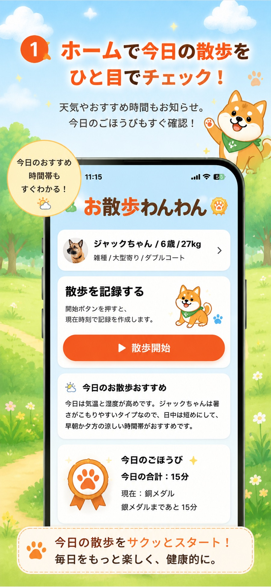
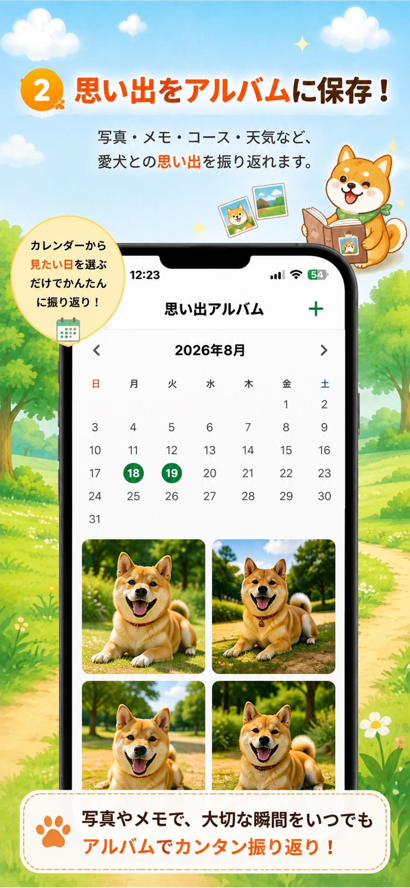
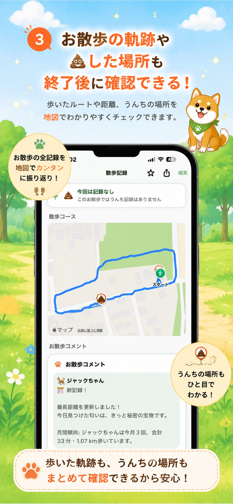
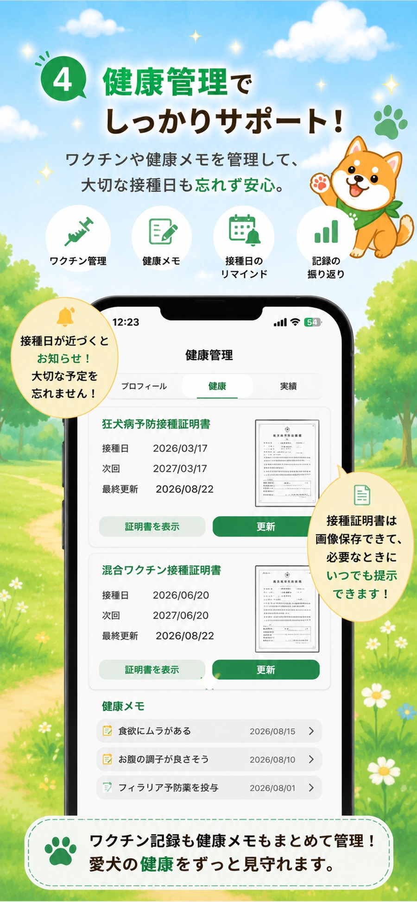
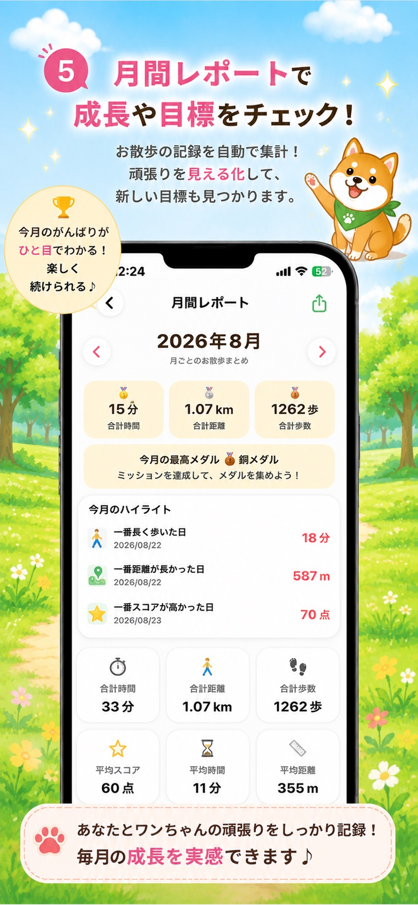

今日をひと目で確認
天気やおすすめ時間、ごほうびの状況をホーム画面に。
愛犬との毎日に、うれしい記録を。
お散歩の記録から思い出アルバム、健康管理まで。
ワンちゃんとの大切な時間を、やさしくひとつにまとめます。
iPhone対応・App Store公開準備中

毎日のお散歩が、宝物になる
散歩を始めるとルートや時間を記録。写真やメモを残して、あとからカレンダーで振り返れます。ワクチン記録や健康メモもまとめて管理できます。
主な機能
天気やおすすめ時間、ごほうびの状況をホーム画面に。
歩いた道のり、時間、距離や歩数を分かりやすく保存。
写真やメモを日付ごとに残し、いつでも振り返れます。
ワクチン証明書や健康メモ、接種日のお知らせをまとめて。
毎月の時間・距離・歩数を自動集計。頑張りを見える化。
お散歩の軌跡と一緒に、記録した場所を地図で確認。
アプリ画面





お散歩わんわんの想い
何気ないお散歩にも、かけがえのない瞬間がたくさんあります。その一歩一歩を大切に残し、ワンちゃんとの健やかな毎日を支えるアプリを目指しています。
たのしく歩いて、
元気を記録。
よくあるご質問
iPhone向けアプリとして公開を予定しています。対応するOSバージョンは、App Store公開時の製品ページでご案内します。
お散歩中のルート・距離などを記録するために使用します。位置情報の利用は端末の設定からいつでも変更できます。
データの取り扱いについては、公開前に最新内容へ更新するプライバシーポリシーをご確認ください。
下記のサポート窓口からお問い合わせください。内容を確認のうえ対応します。
サポート
不具合のご報告やご質問は、サポート窓口からお知らせください。お問い合わせの際は、端末・OS・アプリのバージョンと状況を添えていただくと確認がスムーズです。